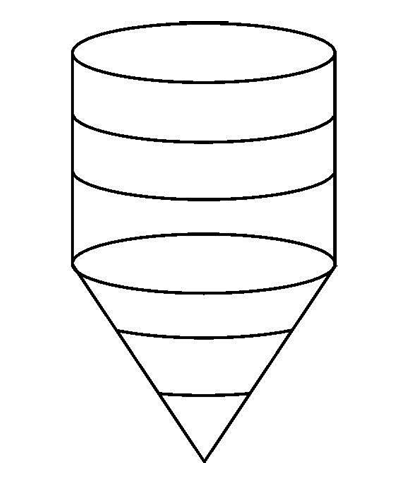

Board Exam 2025
1 Mark
Q19. Assertion (A): In the
given figure, a toy is in the form of a cylinder surmounted by a hemisphere of the same radius. If
the radius of the cylinder is 3 cm and its height is 7 cm, then the volume of toy is \(81\pi\)
cm\(^3\).
 Reason (R): Volume is sum of volumes.
Reason (R): Volume is sum of volumes.
Reason (R): Volume is sum of volumes.
Cylinder: \(r=3, h=7\). Vol = \(\pi(3)^2(7) = 63\pi\).
Hemisphere: \(r=3\). Vol = \(\frac{2}{3}\pi(3)^3 = 18\pi\).
Total = \(63\pi + 18\pi = 81\pi\).
Assertion is True. Reason is True and Explains A.
Answer: (A)
Hemisphere: \(r=3\). Vol = \(\frac{2}{3}\pi(3)^3 = 18\pi\).
Total = \(63\pi + 18\pi = 81\pi\).
Assertion is True. Reason is True and Explains A.
Answer: (A)
5 Marks
Q34. (a) From a solid cylinder of height 2.4
cm
and radius 0.7 cm, a conical cavity of the same height and same radius is hollowed out. Find the
volume
and total surface area of the remaining solid.
OR
Q34. (b)
A carpenter is making a wooden toy (lattu) which is
conical in shape and surmounted by a hemisphere. The ratio of the height of the hemisphere and the
cone is 3 : 4. If the radius of the cone and the hemisphere is 2.1 cm, find the volume of wood
required to make this toy. Also, find the area to be painted after making the toy.
(a) Vol = Vol Cyl - Vol Cone = \(\pi r^2h - \frac{1}{3}\pi r^2h = \frac{2}{3}\pi
r^2h\).
Vol = \(\frac{2}{3} \frac{22}{7} (0.7)^2(2.4) = 1.232 \text{ cm}^3\).
TSA = CSA Cyl + CSA Cone + Area Base.
Slant height \(l = \sqrt{2.4^2 + 0.7^2} = \sqrt{5.76 + 0.49} = \sqrt{6.25} = 2.5\).
TSA = \(2\pi rh + \pi rl + \pi r^2 = \pi r(2h + l + r)\).
TSA = \(\frac{22}{7}(0.7)(4.8 + 2.5 + 0.7) = 2.2(8) = 17.6 \text{ cm}^2\).
(b) \(h_{hemisphere} = r = 2.1\).
Ratio \(h_{hem} : h_{cone} = 3 : 4 \Rightarrow 2.1 : h_{cone} = 3 : 4 \Rightarrow h_{cone} = 2.8\).
Vol = Vol Cone + Vol Hem = \(\frac{1}{3}\pi r^2h + \frac{2}{3}\pi r^3\).
Area = CSA Cone + CSA Hem.
Vol = \(\frac{2}{3} \frac{22}{7} (0.7)^2(2.4) = 1.232 \text{ cm}^3\).
TSA = CSA Cyl + CSA Cone + Area Base.
Slant height \(l = \sqrt{2.4^2 + 0.7^2} = \sqrt{5.76 + 0.49} = \sqrt{6.25} = 2.5\).
TSA = \(2\pi rh + \pi rl + \pi r^2 = \pi r(2h + l + r)\).
TSA = \(\frac{22}{7}(0.7)(4.8 + 2.5 + 0.7) = 2.2(8) = 17.6 \text{ cm}^2\).
(b) \(h_{hemisphere} = r = 2.1\).
Ratio \(h_{hem} : h_{cone} = 3 : 4 \Rightarrow 2.1 : h_{cone} = 3 : 4 \Rightarrow h_{cone} = 2.8\).
Vol = Vol Cone + Vol Hem = \(\frac{1}{3}\pi r^2h + \frac{2}{3}\pi r^3\).
Area = CSA Cone + CSA Hem.
1 Mark
Q20. Assertion (A): If we
join two hemispheres of same radius along their bases, then we get a sphere.
Reason (R): Total Surface Area of a sphere of radius r is \(3\pi r^2\).
Reason (R): Total Surface Area of a sphere of radius r is \(3\pi r^2\).
Assertion is True. Joining two hemispheres forms a sphere.
Reason is False. TSA of sphere is \(4\pi r^2\). (TSA of hemisphere is \(3\pi r^2\)).
Answer: (C)
Reason is False. TSA of sphere is \(4\pi r^2\). (TSA of hemisphere is \(3\pi r^2\)).
Answer: (C)
3 Marks
Q29. A room is in the form of a cylinder
surmounted by a hemispherical dome. The base radius of the hemisphere is half of the height of the
cylindrical part. If the room contains \(\frac{1408}{21}\) m\(^3\) of air, find the height of the
cylindrical part. (Use \(\pi = \frac{22}{7}\)).
Let radius be \(r\) and height of cylinder be \(h_{cyl}\).
Given \(r = h_{cyl}/2 \Rightarrow h_{cyl} = 2r\).
Volume = Vol Cyl + Vol Hemi = \(\pi r^2(2r) + \frac{2}{3}\pi r^3 = 2\pi r^3 + \frac{2}{3}\pi r^3 = \frac{8}{3}\pi r^3\).
\(\frac{8}{3} \times \frac{22}{7} \times r^3 = \frac{1408}{21} \Rightarrow \frac{176}{21}r^3 = \frac{1408}{21}\).
\(176r^3 = 1408 \Rightarrow r^3 = 8 \Rightarrow r = 2\).
Height of cylindrical part = \(2r = 4\) m.
Given \(r = h_{cyl}/2 \Rightarrow h_{cyl} = 2r\).
Volume = Vol Cyl + Vol Hemi = \(\pi r^2(2r) + \frac{2}{3}\pi r^3 = 2\pi r^3 + \frac{2}{3}\pi r^3 = \frac{8}{3}\pi r^3\).
\(\frac{8}{3} \times \frac{22}{7} \times r^3 = \frac{1408}{21} \Rightarrow \frac{176}{21}r^3 = \frac{1408}{21}\).
\(176r^3 = 1408 \Rightarrow r^3 = 8 \Rightarrow r = 2\).
Height of cylindrical part = \(2r = 4\) m.
4 Marks
Q36. Case Study – 2
 A skilled carpenter decided to craft a special rolling pin for the local baker. He carefully joined
three cylindrical pieces of wood – two small ones on the ends and one larger in the centre to create
a perfect tool. The baker loved the rolling pin, as it rolled out the smoothest dough for breads and
pastries.
The length of the bigger cylindrical part is 12 cm and diameter is 7 cm and the length of each
smaller cylindrical part is 5 cm and diameter is 2.1 cm.
A skilled carpenter decided to craft a special rolling pin for the local baker. He carefully joined
three cylindrical pieces of wood – two small ones on the ends and one larger in the centre to create
a perfect tool. The baker loved the rolling pin, as it rolled out the smoothest dough for breads and
pastries.
The length of the bigger cylindrical part is 12 cm and diameter is 7 cm and the length of each
smaller cylindrical part is 5 cm and diameter is 2.1 cm.
Based on the above information, answer the following questions :
(i) Find the volume of the bigger cylindrical part. [1 Mark]
(ii) Find the curved surface area of the bigger cylindrical part. [1 Mark]
(iii) (a) Find the ratio of the volume of the bigger cylindrical part to the total volume of the two smaller (identical) cylindrical parts. [2 Marks]
A skilled carpenter decided to craft a special rolling pin for the local baker. He carefully joined
three cylindrical pieces of wood – two small ones on the ends and one larger in the centre to create
a perfect tool. The baker loved the rolling pin, as it rolled out the smoothest dough for breads and
pastries.
The length of the bigger cylindrical part is 12 cm and diameter is 7 cm and the length of each
smaller cylindrical part is 5 cm and diameter is 2.1 cm.Based on the above information, answer the following questions :
(i) Find the volume of the bigger cylindrical part. [1 Mark]
(ii) Find the curved surface area of the bigger cylindrical part. [1 Mark]
(iii) (a) Find the ratio of the volume of the bigger cylindrical part to the total volume of the two smaller (identical) cylindrical parts. [2 Marks]
OR
(iii) (b) Find the sum of the curved surface areas of the two identical smaller cylindrical parts.
[2 Marks]
Big cylinder: \(R = 3.5\) cm, \(H = 12\) cm.
Small cylinders: \(r = 1.05\) cm, \(h = 5\) cm (each).
(i) Volume of big cylinder = \(\pi R^2 H = \frac{22}{7} \times (3.5)^2 \times 12 = \frac{22}{7} \times 12.25 \times 12 = 462\) cm³.
(ii) CSA of big cylinder = \(2\pi RH = 2 \times \frac{22}{7} \times 3.5 \times 12 = 264\) cm².
(iii) (a) Volume of one small cyl = \(\pi r^2 h = \frac{22}{7} \times (1.05)^2 \times 5 = \frac{22}{7} \times 1.1025 \times 5 = 17.325\) cm³.
Total volume of 2 small = \(2 \times 17.325 = 34.65\) cm³.
Ratio = \(\frac{462}{34.65} = \frac{4620}{346.5} = \frac{40}{3}\) or 40:3.
(iii) (b) CSA of one small = \(2\pi rh = 2 \times \frac{22}{7} \times 1.05 \times 5 = 33\) cm².
Sum of CSA of 2 small = \(2 \times 33 = 66\) cm².
Small cylinders: \(r = 1.05\) cm, \(h = 5\) cm (each).
(i) Volume of big cylinder = \(\pi R^2 H = \frac{22}{7} \times (3.5)^2 \times 12 = \frac{22}{7} \times 12.25 \times 12 = 462\) cm³.
(ii) CSA of big cylinder = \(2\pi RH = 2 \times \frac{22}{7} \times 3.5 \times 12 = 264\) cm².
(iii) (a) Volume of one small cyl = \(\pi r^2 h = \frac{22}{7} \times (1.05)^2 \times 5 = \frac{22}{7} \times 1.1025 \times 5 = 17.325\) cm³.
Total volume of 2 small = \(2 \times 17.325 = 34.65\) cm³.
Ratio = \(\frac{462}{34.65} = \frac{4620}{346.5} = \frac{40}{3}\) or 40:3.
(iii) (b) CSA of one small = \(2\pi rh = 2 \times \frac{22}{7} \times 1.05 \times 5 = 33\) cm².
Sum of CSA of 2 small = \(2 \times 33 = 66\) cm².
1 Mark
Q5. The radii 'r' of a sphere and that of the
base of a cone are same. If their volumes are also same, then the height of the cone is :
Vol Sphere = Vol Cone.
\(\frac{4}{3}\pi r^3 = \frac{1}{3}\pi r^2 h\).
\(4r = h\).
Answer: (D)
\(\frac{4}{3}\pi r^3 = \frac{1}{3}\pi r^2 h\).
\(4r = h\).
Answer: (D)
5 Marks
Q32. A solid toy is in the form of a
hemisphere surmounted by a right circular cone. The height of the cone is 2 cm and the diameter of
the base is 4 cm. Determine the volume of the toy. Also, find the surface area of the toy. (Take
\(\pi = 3.14\))
Radius \(r = 2\) cm. Cone height \(h = 2\) cm.
Slant height of cone \(l = \sqrt{r^2 + h^2} = \sqrt{4 + 4} = \sqrt{8} = 2\sqrt{2} \approx 2.83\) cm.
Volume of toy:
= Volume of hemisphere + Volume of cone
= \(\frac{2}{3}\pi r^3 + \frac{1}{3}\pi r^2 h\)
= \(\frac{2}{3} \times 3.14 \times 8 + \frac{1}{3} \times 3.14 \times 4 \times 2\)
= \(\frac{16.75 + 8.37}{1} = 16.75 + 8.37 = 25.12\) cm³.
Surface Area of toy:
= CSA of hemisphere + CSA of cone (no base, as it's internal)
= \(2\pi r^2 + \pi r l\)
= \(2 \times 3.14 \times 4 + 3.14 \times 2 \times 2.83\)
= \(25.12 + 17.77 = 42.89\) cm².
Volume = 25.12 cm³, Surface Area = 42.89 cm²
Slant height of cone \(l = \sqrt{r^2 + h^2} = \sqrt{4 + 4} = \sqrt{8} = 2\sqrt{2} \approx 2.83\) cm.
Volume of toy:
= Volume of hemisphere + Volume of cone
= \(\frac{2}{3}\pi r^3 + \frac{1}{3}\pi r^2 h\)
= \(\frac{2}{3} \times 3.14 \times 8 + \frac{1}{3} \times 3.14 \times 4 \times 2\)
= \(\frac{16.75 + 8.37}{1} = 16.75 + 8.37 = 25.12\) cm³.
Surface Area of toy:
= CSA of hemisphere + CSA of cone (no base, as it's internal)
= \(2\pi r^2 + \pi r l\)
= \(2 \times 3.14 \times 4 + 3.14 \times 2 \times 2.83\)
= \(25.12 + 17.77 = 42.89\) cm².
Volume = 25.12 cm³, Surface Area = 42.89 cm²
1 Mark
Q2. On the top face of the wooden cube of side 7
cm, hemispherical depressions of radius 0.35 cm are to be formed by taking out the wood. The maximum
number of depressions that can be formed is :
Diameter = 0.7cm. Number along side = 7/0.7 = 10. Total =
10x10=100.
Answer: (b)
Answer: (b)
5 Marks
Q33. A bat manufacturing company made a huge bat
for charity and got it signed by world cup winning team.
The dimensions of the bat which is in the form of a cuboid with a cylindrical handle at the top are as follows :
length = 2 m, width = 0.5 m, thickness = 0.1 m
diameter of cylindrical part = 0.1 m
height of cylindrical part = 0.7 m
Find the volume of wood used in the bat. Also, find the total surface area of the wooden bat.
The dimensions of the bat which is in the form of a cuboid with a cylindrical handle at the top are as follows :
length = 2 m, width = 0.5 m, thickness = 0.1 m
diameter of cylindrical part = 0.1 m
height of cylindrical part = 0.7 m
Find the volume of wood used in the bat. Also, find the total surface area of the wooden bat.
(i) Volume of Wood:
Bat = Cuboid + Cylinder.
Cuboid Dimensions: \(l = 2\) m, \(b = 0.5\) m, \(h = 0.1\) m.
Volume of Cuboid = \(l \times b \times h = 2 \times 0.5 \times 0.1 = 0.1 \text{ m}^3\).
Cylinder Dimensions: diameter \(d = 0.1\) m \(\Rightarrow r = 0.05\) m, Height \(H = 0.7\) m.
Volume of Cylinder = \(\pi r^2 H = \frac{22}{7} \times (0.05)^2 \times 0.7\).
\(= \frac{22}{7} \times 0.0025 \times 0.7 = 22 \times 0.0025 \times 0.1 = 22 \times 0.00025 = 0.0055 \text{ m}^3\).
Total Volume = \(0.1 + 0.0055 = 0.1055 \text{ m}^3\).
(ii) Total Surface Area:
TSA = TSA of Cuboid - Area of Circular Base (hidden) + CSA of Cylinder + Area of Top Circle of Cylinder.
Wait, is the cylinder handle attached on top of the narrow face or broad face? "Top face" usually implies one of the faces. Or is it integrated? "Cuboid with cylindrical handle at the top".
Usually, the handle is attached to one small face (width x thickness). But here dimensions are huge (\(2 \times 0.5 \times 0.1\)). This is a "huge bat for charity".
Let's assume handle is on the \(0.5 \times 0.1\) face? No, handle diameter is 0.1 m, thickness is 0.1 m. It fits exactly on the thickness.
Or is it on the top (2m x 0.5m)? Unlikely for a bat.
Standard bat shape: Handle extends from the shoulder. So attached to the \(0.5 \times 0.1\) face? Or handle is part of the length? No, length given as 2m (blade?).
Let's calculate TSA as: TSA Cuboid + CSA Cylinder + Area of Circular Top - Area of Circular Base (contact).
TSA Cuboid = \(2(lb + bh + hl) = 2(2 \times 0.5 + 0.5 \times 0.1 + 0.1 \times 2)\).
\(= 2(1.0 + 0.05 + 0.2) = 2(1.25) = 2.5 \text{ m}^2\).
CSA Cylinder = \(2\pi rH = 2 \times \frac{22}{7} \times 0.05 \times 0.7 = 2 \times 22 \times 0.05 \times 0.1 = 0.22 \text{ m}^2\).
Area of Circular Base = \(\pi r^2 = \frac{22}{7} \times (0.05)^2 = \frac{22}{7} \times 0.0025 = 0.00785 \text{ m}^2\).
TSA = TSA Cuboid + CSA Cylinder. (Top circle included? Usually handle end is included).
But base of cylinder is attached to cuboid, so we subtract that area from cuboid TSA. And we add CSA + Top Area of cylinder.
So effectively: TSA Cuboid + CSA Cylinder + Area Top - Area Base.
Since Area Top = Area Base, it simplifies to TSA Cuboid + CSA Cylinder?
Wait. We subtract the contact area from Cuboid. We add CSA and Top of Cylinder.
So yes, TSA = (TSA Cuboid - Area Base) + (CSA Cylinder + Area Top).
Since Area Base = Area Top, it is TSA Cuboid + CSA Cylinder.
TSA = \(2.5 + 0.22 = 2.72 \text{ m}^2\).
Bat = Cuboid + Cylinder.
Cuboid Dimensions: \(l = 2\) m, \(b = 0.5\) m, \(h = 0.1\) m.
Volume of Cuboid = \(l \times b \times h = 2 \times 0.5 \times 0.1 = 0.1 \text{ m}^3\).
Cylinder Dimensions: diameter \(d = 0.1\) m \(\Rightarrow r = 0.05\) m, Height \(H = 0.7\) m.
Volume of Cylinder = \(\pi r^2 H = \frac{22}{7} \times (0.05)^2 \times 0.7\).
\(= \frac{22}{7} \times 0.0025 \times 0.7 = 22 \times 0.0025 \times 0.1 = 22 \times 0.00025 = 0.0055 \text{ m}^3\).
Total Volume = \(0.1 + 0.0055 = 0.1055 \text{ m}^3\).
(ii) Total Surface Area:
TSA = TSA of Cuboid - Area of Circular Base (hidden) + CSA of Cylinder + Area of Top Circle of Cylinder.
Wait, is the cylinder handle attached on top of the narrow face or broad face? "Top face" usually implies one of the faces. Or is it integrated? "Cuboid with cylindrical handle at the top".
Usually, the handle is attached to one small face (width x thickness). But here dimensions are huge (\(2 \times 0.5 \times 0.1\)). This is a "huge bat for charity".
Let's assume handle is on the \(0.5 \times 0.1\) face? No, handle diameter is 0.1 m, thickness is 0.1 m. It fits exactly on the thickness.
Or is it on the top (2m x 0.5m)? Unlikely for a bat.
Standard bat shape: Handle extends from the shoulder. So attached to the \(0.5 \times 0.1\) face? Or handle is part of the length? No, length given as 2m (blade?).
Let's calculate TSA as: TSA Cuboid + CSA Cylinder + Area of Circular Top - Area of Circular Base (contact).
TSA Cuboid = \(2(lb + bh + hl) = 2(2 \times 0.5 + 0.5 \times 0.1 + 0.1 \times 2)\).
\(= 2(1.0 + 0.05 + 0.2) = 2(1.25) = 2.5 \text{ m}^2\).
CSA Cylinder = \(2\pi rH = 2 \times \frac{22}{7} \times 0.05 \times 0.7 = 2 \times 22 \times 0.05 \times 0.1 = 0.22 \text{ m}^2\).
Area of Circular Base = \(\pi r^2 = \frac{22}{7} \times (0.05)^2 = \frac{22}{7} \times 0.0025 = 0.00785 \text{ m}^2\).
TSA = TSA Cuboid + CSA Cylinder. (Top circle included? Usually handle end is included).
But base of cylinder is attached to cuboid, so we subtract that area from cuboid TSA. And we add CSA + Top Area of cylinder.
So effectively: TSA Cuboid + CSA Cylinder + Area Top - Area Base.
Since Area Top = Area Base, it simplifies to TSA Cuboid + CSA Cylinder?
Wait. We subtract the contact area from Cuboid. We add CSA and Top of Cylinder.
So yes, TSA = (TSA Cuboid - Area Base) + (CSA Cylinder + Area Top).
Since Area Base = Area Top, it is TSA Cuboid + CSA Cylinder.
TSA = \(2.5 + 0.22 = 2.72 \text{ m}^2\).
1 Mark
Q6. A cone of height 12 cm and slant height
13 cm is surmounted on a hemisphere having radius equal to that of cone. The entire height of the
solid is:
Radius \(r = \sqrt{l^2 - h^2} = \sqrt{13^2 - 12^2} = \sqrt{169-144} = 5\)
cm.
Height of hemisphere = Radius = 5 cm.
Total height = \(12 + 5 = 17\) cm.
Correct Option: (A) 17 cm
Height of hemisphere = Radius = 5 cm.
Total height = \(12 + 5 = 17\) cm.
Correct Option: (A) 17 cm
5 Marks
Q33. (a) From one of the faces of a solid wooden
cube of side 14 cm, maximum number of hemispheres of diameter 1.4 cm are scooped out. Find the total
number of hemispheres that can be scooped out. Also, find the total surface area of the remaining solid.
OR
Q33. (b) From a solid cylinder of height 24 cm
and radius 5 cm, two cones of height 12 cm and radius 5 cm are hollowed out. Find the volume and surface
area of the remaining solid.
(a): Diameter = 1.4 cm. Side = 14 cm. Hemispheres along one side
= \(14/1.4 = 10\).
Total hemispheres = \(10 \times 10 = 100\).
SA = TSA of Cube - Area of 100 circles + CSA of 100 hemispheres.
= \(6(196) - 100(\pi r^2) + 100(2\pi r^2) = 6(196) + 100(\pi r^2)\).
= \(1176 + 100(22/7)(0.49) = 1176 + 154 = 1330\) cm².
(b): Volume = \(\pi r^2 H - 2(\frac{1}{3}\pi r^2 h) = \pi(25)(24) - \frac{2}{3}\pi(25)(12) = 600\pi - 200\pi = 400\pi \approx 1256\) cm³.
SA = \(2\pi rH + 2(\pi rl) = 2\pi(5)(24) + 2\pi(5)(13) = 240\pi + 130\pi = 370\pi \approx 1162\) cm².
Total hemispheres = \(10 \times 10 = 100\).
SA = TSA of Cube - Area of 100 circles + CSA of 100 hemispheres.
= \(6(196) - 100(\pi r^2) + 100(2\pi r^2) = 6(196) + 100(\pi r^2)\).
= \(1176 + 100(22/7)(0.49) = 1176 + 154 = 1330\) cm².
(b): Volume = \(\pi r^2 H - 2(\frac{1}{3}\pi r^2 h) = \pi(25)(24) - \frac{2}{3}\pi(25)(12) = 600\pi - 200\pi = 400\pi \approx 1256\) cm³.
SA = \(2\pi rH + 2(\pi rl) = 2\pi(5)(24) + 2\pi(5)(13) = 240\pi + 130\pi = 370\pi \approx 1162\) cm².
1 Mark
Q5. If a cone of greatest possible volume is
hollowed out from a solid wooden cylinder, then the ratio of the volume of remaining wood to the volume
of cone hollowed out is
Vol Cylinder = \(\pi r^2 h\).
Vol Cone (greatest) = \(\frac{1}{3}\pi r^2 h\).
Vol Remaining = \(\pi r^2 h - \frac{1}{3}\pi r^2 h = \frac{2}{3}\pi r^2 h\).
Ratio = \(\frac{2}{3}\pi r^2 h : \frac{1}{3}\pi r^2 h = 2 : 1\).
Correct Option: (C)
Vol Cone (greatest) = \(\frac{1}{3}\pi r^2 h\).
Vol Remaining = \(\pi r^2 h - \frac{1}{3}\pi r^2 h = \frac{2}{3}\pi r^2 h\).
Ratio = \(\frac{2}{3}\pi r^2 h : \frac{1}{3}\pi r^2 h = 2 : 1\).
Correct Option: (C)
5 Marks
Q33. Fermentation tanks are designed in the form
of cylinder mounted on a cone as shown below:

The total height of the tank is 3.3 m and height of conical part is 1.2 m. The diameter of the
cylindrical as well as conical part is 1 m.
Find the capacity of the tank. If the level of liquid in the tank is 0.7 m from the top, find the surface area of the tank in contact with liquid.
Find the capacity of the tank. If the level of liquid in the tank is 0.7 m from the top, find the surface area of the tank in contact with liquid.
Radius \(r = 0.5\) m. Total H = 3.3 m. Cone H \((h_c)\) = 1.2 m.
Cylinder H \((h_{cyl})\) = \(3.3 - 1.2 = 2.1\) m.
1. Capacity:
\(V = V_{cyl} + V_{cone} = \pi r^2 h_{cyl} + \frac{1}{3}\pi r^2 h_c\)
\(= \pi(0.5)^2(2.1) + \frac{1}{3}\pi(0.5)^2(1.2)\)
\(= 0.25\pi(2.1 + 0.4) = 0.25\pi(2.5) = 0.625\pi \approx 1.96\) m³.
2. Surface Area in contact with liquid:
Liquid level is 0.7 m from top. So liquid height in cylinder = \(2.1 - 0.7 = 1.4\) m.
Liquid fills entire cone and 1.4 m of cylinder.
Area = CSA Cone + CSA Cylinder (height 1.4 m).
Slant height \(l = \sqrt{1.2^2 + 0.5^2} = \sqrt{1.44 + 0.25} = \sqrt{1.69} = 1.3\) m.
CSA Cone = \(\pi r l = \pi(0.5)(1.3) = 0.65\pi\).
CSA Cyl = \(2\pi r h = 2\pi(0.5)(1.4) = 1.4\pi\).
Total Area = \(2.05\pi \approx 6.44\) m².
Cylinder H \((h_{cyl})\) = \(3.3 - 1.2 = 2.1\) m.
1. Capacity:
\(V = V_{cyl} + V_{cone} = \pi r^2 h_{cyl} + \frac{1}{3}\pi r^2 h_c\)
\(= \pi(0.5)^2(2.1) + \frac{1}{3}\pi(0.5)^2(1.2)\)
\(= 0.25\pi(2.1 + 0.4) = 0.25\pi(2.5) = 0.625\pi \approx 1.96\) m³.
2. Surface Area in contact with liquid:
Liquid level is 0.7 m from top. So liquid height in cylinder = \(2.1 - 0.7 = 1.4\) m.
Liquid fills entire cone and 1.4 m of cylinder.
Area = CSA Cone + CSA Cylinder (height 1.4 m).
Slant height \(l = \sqrt{1.2^2 + 0.5^2} = \sqrt{1.44 + 0.25} = \sqrt{1.69} = 1.3\) m.
CSA Cone = \(\pi r l = \pi(0.5)(1.3) = 0.65\pi\).
CSA Cyl = \(2\pi r h = 2\pi(0.5)(1.4) = 1.4\pi\).
Total Area = \(2.05\pi \approx 6.44\) m².